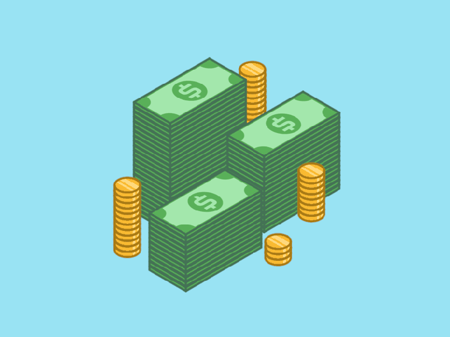

How to Save Money: Easy and efficient Access Ways
By setting up automatic transfers from your checking account to your savings account each month, the money will accumulate over time without any additional work on your part. This technique can be especially useful when your savings accounts are dedicated to specific goals, such as establishing an emergency fund, going on a vacation or building a down payment.
You can also let apps like Digit or Qapital do some of the work for you. After you sign up, they'll transfer small amounts from your checking account to a separate savings account for you. That way, you don’t have to spend time or energy thinking about making a transfer. You can learn more about apps that automate savings and decide if they’re a good fit for you.
How else can I save money?
For one month, write down everything you spend. Small expenses, like a cup of coffee, can add up to a lot of money. When you know where you are spending your money, you can decide what you might not want to buy. Pay with your credit card only if you can pay the full amount when the bill comes. That way, you do not pay interest on what you owe. Consider opening a savings account in a bank or credit union. Read more about opening a bank account. If you keep cash at home, keep the money you are saving separate from your spending money. Keep all your cash someplace safe.
Count your coins and bills
Another option is saving your change manually by setting it aside each night. After you have a sizable amount, you can deposit it directly into your savings and watch your account grow from there. In fact, when you want to watch your spending, it’s a good idea to use cash instead of credit cards because it can be harder to part with physical money. While this strategy doesn’t build savings overnight, it's a solid approach for slow-and-steady savings growth.
Bundle cable and internet
You could lower your cable bill by as much as $40 per month by changing your cable package. And you could save more than $1,000 over two years by bundling your cable and internet service, depending on your carrier. Another option to consider is cutting cable or at least cutting some of your additional streaming services or premium subscriptions

Track spending
Keep track of your monthly cash flow — your income minus your expenditures. This step will also make it easier to mark progress toward your savings goal. Try a budget app that tracks your spending.
Expenses Make Problem when Exceeds
An expense is the cost of operations that a company incurs to generate revenue. As the popular saying goes, “it costs money to make money.”The cost of personal or family living; "some personal expenses are tax deductible" disbursal, disbursement, expense - amounts paid for goods and services that may be currently tax deductible (as opposed to capital expenditures)
A lot of Expenses Make your Budgeted List to get Worse and lost the savings for future.An expense is the cost of operations that a company incurs to generate revenue. Businesses can write off tax-deductible expenses on their income tax returns, provided that they meet the IRS’ guidelines. Accountants record expenses through one of two accounting methods: cash basis or accrual basis.
Create a 50/30/20 budget
One smart way to manage your money — and hopefully hold on to more of it — is to follow a budget, which means setting priorities for your spending. At NerdWallet, we recommend the 50/30/20 budget for money management. This approach means devoting 50% of your after-tax income to necessities, 30% to wants and 20% to savings and any debt payments. If one of your allocations exceeds these percentages, you can make some adjustments elsewhere.